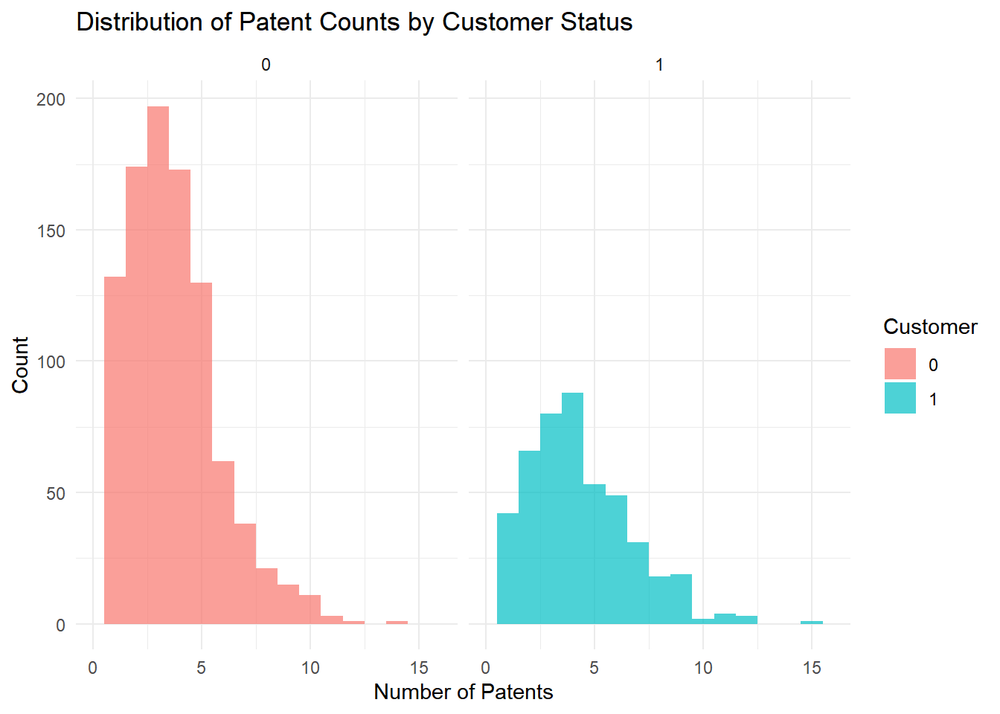
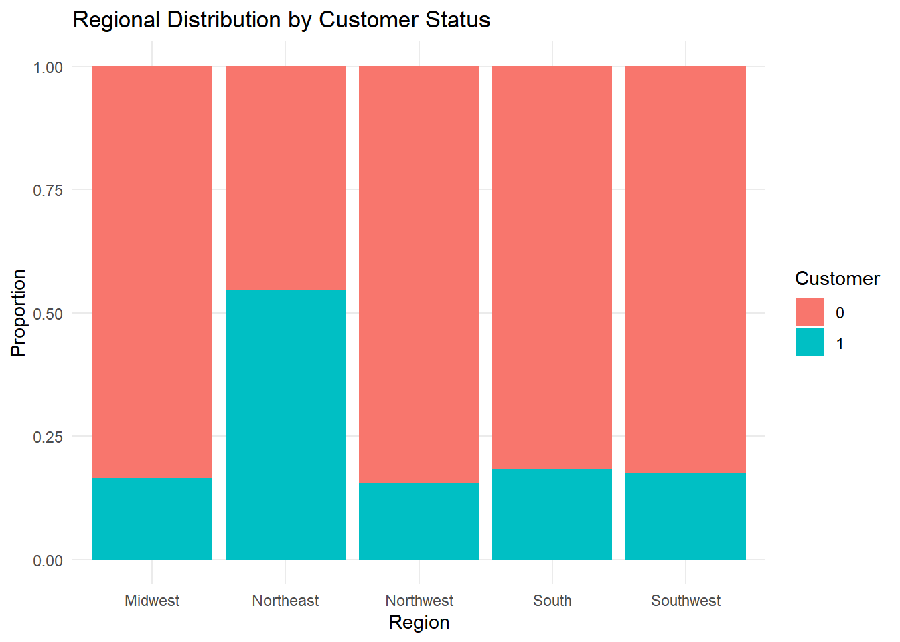
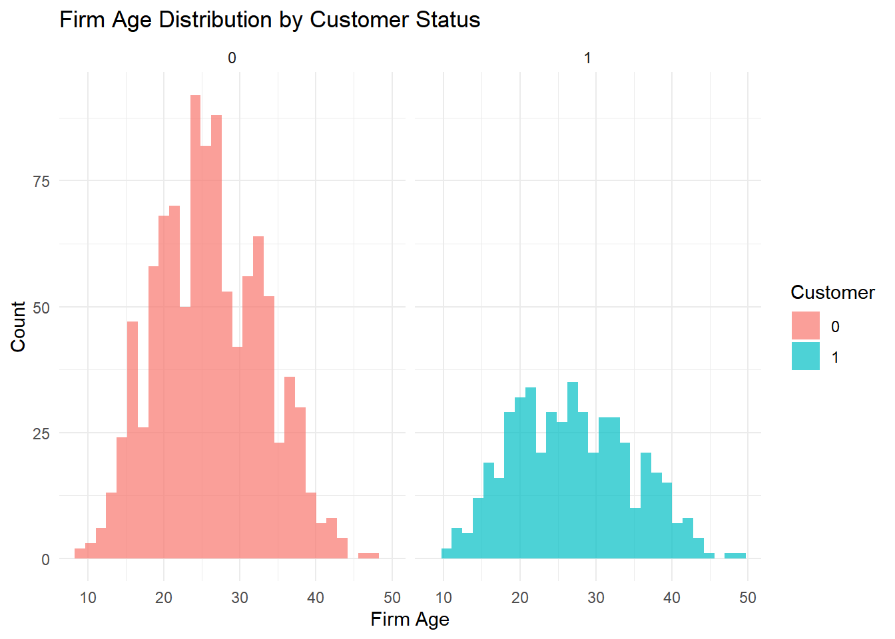
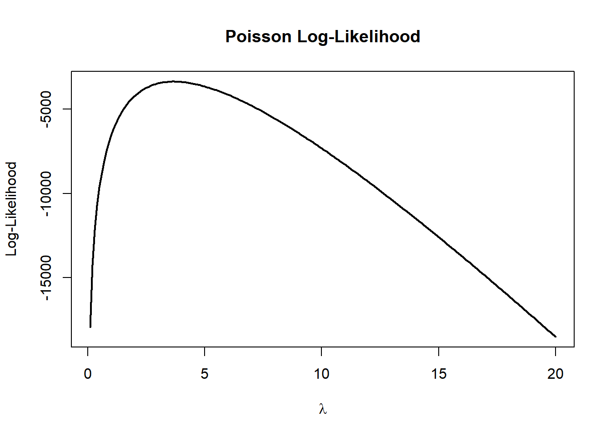

library(ggplot2)Poisson Regression and Maximum Likelihood Estimation
A Case Study of Blueprinty’s Software and Patent Awards
Introduction
Blueprinty is a small software company that develops blueprint design tools specifically for engineering firms submitting patent applications to the US Patent Office. The company’s marketing team would like to argue that firms using Blueprinty’s software are more successful in obtaining patent awards.
Ideally, we would evaluate this claim using longitudinal data that track firms before and after adopting Blueprinty’s software. However, such data are unavailable. Instead, Blueprinty has collected cross-sectional data on 1,500 mature engineering firms. The dataset includes the number of patents awarded to each firm over the last five years, the firm’s regional location, firm age, and whether the firm is a Blueprinty customer.
This makes the marketing claim difficult to evaluate causally. Blueprinty’s customers are not randomly assigned to use the software. Firms choosing to adopt Blueprinty may differ systematically from non-customers in ways that also affect patenting activity. For example, customers may be older firms with more established research pipelines or may operate in regions with stronger innovation ecosystems. As a result, any raw difference in patent counts could reflect these underlying differences rather than the software itself.
In this analysis, I use Poisson regression estimated via Maximum Likelihood Estimation (MLE) to examine whether Blueprinty customer status is associated with higher patent counts after controlling for firm age and regional differences.
Exploring the Data
df <- read.csv("blueprinty.csv")
df$iscustomer <- as.factor(df$iscustomer)
df$region <- as.factor(df$region)
summary(df) patents region age iscustomer
Min. : 0.000 Midwest :224 Min. : 9.00 0:1019
1st Qu.: 2.000 Northeast:601 1st Qu.:21.00 1: 481
Median : 3.000 Northwest:187 Median :26.00
Mean : 3.685 South :191 Mean :26.36
3rd Qu.: 5.000 Southwest:297 3rd Qu.:31.62
Max. :16.000 Max. :49.00 Patent Counts by Customer Status
aggregate(patents ~ iscustomer, data = df, mean) iscustomer patents
1 0 3.473013
2 1 4.133056
The histograms suggest that Blueprinty customers tend to have somewhat higher patent counts than non-customers. However, this difference alone does not establish that the software causes higher patent output. Customer firms may differ systematically in other characteristics that also influence patenting activity.
Regional Differences

The regional distribution differs somewhat between customers and non-customers. This matters because some regions may have stronger innovation ecosystems, larger engineering sectors, or more favorable business environments that naturally generate higher patent counts.
Firm Age by Customer Status

Firm age distributions also differ between customers and non-customers. Older firms may have accumulated more resources, larger R&D operations, and more experience with the patenting process. Ignoring these differences could bias estimates of Blueprinty’s effect.
A Simple Poisson Model via Maximum Likelihood
The outcome variable in this analysis is a count: the number of patents awarded over the last five years. Count outcomes cannot be negative and are restricted to integer values, making the Normal distribution inappropriate. The Poisson distribution is the standard starting point for modeling non-negative count data.
Assume:
\[ Y_i \sim \text{Poisson}(\lambda) \]
with probability mass function:
\[ f(Y_i|\lambda) = \frac{e^{-\lambda}\lambda^{Y_i}}{Y_i!} \]
Assuming observations are independent and identically distributed, the joint likelihood is:
\[ L(\lambda|Y) = \prod_{i=1}^N \frac{e^{-\lambda}\lambda^{Y_i}}{Y_i!} \]
Taking logs:
\[ \log L(\lambda|Y) = \sum_{i=1}^N \left( -\lambda + Y_i \log(\lambda) - \log(Y_i!) \right) \]
Coding the Log-Likelihood
poisson_loglikelihood <- function(lambda, Y){
if(lambda <= 0){
return(-Inf)
}
ll <- sum(dpois(Y, lambda, log = TRUE))
return(ll)
}Plotting the Log-Likelihood

The log-likelihood curve reaches its maximum at the value of \(\) that best fits the observed data. Visually, the peak of the curve corresponds to the Maximum Likelihood Estimate (MLE).
Numerical Optimization
neg_loglik <- function(lambda, Y){
-poisson_loglikelihood(lambda, Y)
}
mle_result <- optim(
par = mean(df$patents),
fn = neg_loglik,
Y = df$patents,
method = "L-BFGS-B",
lower = 0.001
)
mle_result$par[1] 3.684667mean(df$patents)[1] 3.684667The numerical MLE obtained from optim() is essentially identical to the sample mean. This makes sense because the mean of a Poisson distribution is equal to its rate parameter \(\).
Poisson Regression
The simple Poisson model assumes every firm shares the same patent rate \(\). This is unrealistic because firms differ in age, region, and customer status. Poisson regression allows each firm to have its own rate parameter:
\[ Y_i \sim \text{Poisson}(\lambda_i) \]
where
\[ \lambda_i = \exp(X_i'\beta) \]
The exponential link function ensures that \(_i\) remains strictly positive even though the linear predictor \(X_i’\) can take any real value.
Constructing the Design Matrix
df$age2 <- df$age^2
X <- model.matrix(
~ age + age2 + region + iscustomer,
data = df
)
Y <- df$patentsAge squared is included because the relationship between firm age and patenting is unlikely to be perfectly linear. One region category is omitted automatically to avoid perfect multicollinearity with the intercept.
Poisson Regression Log-Likelihood
poisson_regression_loglikelihood <- function(beta, Y, X){
lambda <- exp(X %*% beta)
ll <- sum(dpois(Y, lambda, log = TRUE))
return(-ll)
}Estimating the Model with optim()
beta_start <- rep(0, ncol(X))
optim_results <- optim(
par = beta_start,
fn = poisson_regression_loglikelihood,
Y = Y,
X = X,
hessian = TRUE
)
beta_hat <- optim_results$par
vcov_matrix <- solve(optim_results$hessian)
standard_errors <- sqrt(diag(vcov_matrix))
results_table <- data.frame(
Variable = colnames(X),
Coefficient = round(beta_hat, 4),
Std_Error = round(standard_errors, 4)
)
results_table Variable Coefficient Std_Error
1 (Intercept) -0.2488 0.1123
2 age 0.1326 0.0065
3 age2 -0.0027 0.0001
4 regionNortheast -0.0261 0.0430
5 regionNorthwest -0.0717 0.0534
6 regionSouth -0.0093 0.0524
7 regionSouthwest -0.0128 0.0468
8 iscustomer1 0.2125 0.0309| Variable | Coefficient | Std_Error |
|---|---|---|
| (Intercept) | -0.2488 | 0.1123 |
| age | 0.1326 | 0.0065 |
| age2 | -0.0027 | 0.0001 |
| regionNortheast | -0.0261 | 0.0430 |
| regionNorthwest | -0.0717 | 0.0534 |
| regionSouth | -0.0093 | 0.0524 |
| regionSouthwest | -0.0128 | 0.0468 |
| iscustomer1 | 0.2125 | 0.0309 |
Checking Against glm()
glm_model <- glm(
patents ~ age + age2 + region + iscustomer,
family = poisson(),
data = df
)
summary(glm_model)
Call:
glm(formula = patents ~ age + age2 + region + iscustomer, family = poisson(),
data = df)
Coefficients:
Estimate Std. Error z value Pr(>|z|)
(Intercept) -0.508920 0.183179 -2.778 0.00546 **
age 0.148619 0.013869 10.716 < 2e-16 ***
age2 -0.002971 0.000258 -11.513 < 2e-16 ***
regionNortheast 0.029170 0.043625 0.669 0.50372
regionNorthwest -0.017574 0.053781 -0.327 0.74383
regionSouth 0.056561 0.052662 1.074 0.28281
regionSouthwest 0.050576 0.047198 1.072 0.28391
iscustomer1 0.207591 0.030895 6.719 1.83e-11 ***
---
Signif. codes: 0 '***' 0.001 '**' 0.01 '*' 0.05 '.' 0.1 ' ' 1
(Dispersion parameter for poisson family taken to be 1)
Null deviance: 2362.5 on 1499 degrees of freedom
Residual deviance: 2143.3 on 1492 degrees of freedom
AIC: 6532.1
Number of Fisher Scoring iterations: 5The coefficient estimates from glm() closely match the estimates obtained using optim(). Small differences in standard errors may arise because optim() computes the Hessian numerically, while glm() uses built-in analytical routines.
Interpreting the Results
The coefficient on iscustomer is the primary quantity of interest. A positive coefficient implies that Blueprinty customers are associated with higher expected patent counts after controlling for firm age and region.
Because the Poisson model is multiplicative, coefficients are interpreted in percentage terms after exponentiation. Specifically:
exp(coef(glm_model)) (Intercept) age age2 regionNortheast regionNorthwest
0.6011446 1.1602314 0.9970339 1.0295997 0.9825790
regionSouth regionSouthwest iscustomer1
1.0581915 1.0518769 1.2307094 Exponentiating the customer coefficient gives the incidence rate ratio (IRR). Values above 1 indicate higher expected patent counts for Blueprinty customers relative to non-customers.
The Effect of Blueprinty’s Software
The Poisson regression coefficients are not directly interpretable as “additional patents.” To produce a more intuitive estimate, I construct two counterfactual datasets.
Counterfactual Predictions
X0 <- X
X1 <- X
customer_col <- which(colnames(X) == "iscustomer1")
X0[, customer_col] <- 0
X1[, customer_col] <- 1
yhat0 <- exp(X0 %*% beta_hat)
yhat1 <- exp(X1 %*% beta_hat)
average_effect <- mean(yhat1 - yhat0)
average_effect[1] 0.8088787The estimated average treatment effect suggests that Blueprinty customers are predicted to receive approximately this many additional patents over a five-year period relative to otherwise similar non-customers.
This result provides evidence consistent with Blueprinty’s marketing claim. However, this analysis remains observational rather than experimental. Although the regression controls for age and region, there may still be unobserved differences between customer and non-customer firms that influence patenting outcomes. Therefore, the results should be interpreted as evidence of association rather than definitive causal proof.